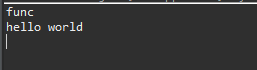
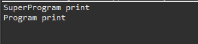
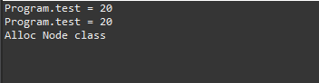
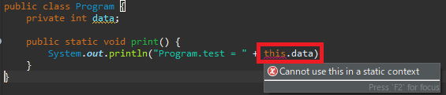

こんにちは。明月です。
この投稿はアクセス修飾子とstaticに関する説明ですこの投稿はアクセス修飾子とstaticに関する説明です。
以前の投稿でクラスに関して説明したことがあります。
link - [Java] 7. クラスを作成する方法(コンストラクタを作成方法)
アクセス修飾子
クラスは変数と関数、コンストラクタを持っているし、その属性にアクセスするためにはアクセス修飾子が必要だと説明したことがあります。
アクセス修飾子はプログラミングのオブジェクト指向(OOP)の４つ特徴の中でカプセル化と関係があるキーワードです。
カプセル化とはクラスをオブジェクトに考えて一つの目的と役割を設定してデータと機能を一つのオブジェクトに結ぶという意味になります。少し難しい概念ですね。オブジェクト指向(OOP)の４つ特徴に関しては別の投稿で詳細に説明します。
その意味でアクセス修飾子は関数や変数、クラスのアクセスの方法に関して設定することです。
Javaで扱うアクセス修飾子は下記通りになります。
| アクセス修飾子 | |
| アクセス修飾子 | 説明 |
|---|---|
| public | すべてクラスからアクセスが可能です。 |
| private | クラス内部だけにアクセスが可能です。 |
| protected | 同じパッケージに属するクラスかつ継承されたクラスだけにアクセスが可能です。(クラス内部もアクセス可能) |
アクセス修飾子のアクセス権限は下記通りになります。
| アクセス権限 | ||||
| アクセス修飾子 | クラス | 継承されたクラス | 同じパッケージ | すべてクラス |
|---|---|---|---|---|
| private | ○ | ☓ | ☓ | ☓ |
| (default) | ○ | ☓ | ○ | ☓ |
| protected | ○ | ○ | ○ | ☓ |
| public | ○ | ○ | ○ | ○ |
まず、上の表をみてまとめるとpublicとprivate、protectedの差異はクラスの外部からアクセスが可能かどうかの差異だけです。
publicの場合はクラスの内部、外部の関係しずにアクセスができるし、privateの場合はクラス内部、つまりインスタンス内だけアクセスができます。
protectedの場合は基本インスタンス外部ではアクセスができないことはprivateと同じですが、でも継承したクラスが親クラスにアクセスする時には許すということです。
// クラス
public class Program {
// privateを設定
private void func() {
// コンソール出力
System.out.println("func");
}
// publicを設定
public void print() {
// func関数を呼び出す。
// 同じクラス内なのでfunc関数を呼び出すことができる。
this.func();
// コンソール出力
System.out.println("hello world");
}
// main関数
public static void main(String... args) {
// Programインスタンスを生成
Program p = new Program();
// Programクラスのprint関数を呼び出す。
// print関数はpublicなのでインスタンス外部でも呼び出すことができる。
p.print();
}
}

main関数はProgramのクラス内部だけとstaticが付けているので一応、外部だと考えましょう。(staticでもクラス内部にあることに判断しますが、これについては下記のところでもっと詳細に説明します。)
main関数でProgramクラスをnewで割りあってインスタンスを生成しました。後にpの変数にインスタンスを格納しました。
ここでpの変数を通ってprint関数を呼び出しました。ここでインスタンスを生成して呼び出すことをクラス立場ではクラスの外部に判断します。
つまり、変数pにはfunc関数を呼び出すことができなく、print関数だけ呼び出すことができます。
でも、print関数の中をみればfunc関数を呼び出しました。特にthisキーワードを付けて呼び出しましたね。
つまり、そこの領域はクラス内部で内部の関数を呼び出すと判断することです。つまり、privateでもアクセスができることです。
改めてまとめるとpublicはクラス外部だけ呼び出すことができる、privateとprotectedはクラス内部だけ呼び出すことができると意味です。
また、privateとprotectedの差異を確認しましょう。
// 親クラス(SuperProgram)
class SuperProgram {
// protectedに設定した関数
protected void print() {
// コンソール出力
System.out.println("SuperProgram print");
}
}
// クラス、SuperProgramを継承する。
public class Program extends SuperProgram{
// privateに設定した関数
private void print() {
// コンソール出力
System.out.println("Program print");
}
// publicに設定した関数
public void run() {
// 親クラスのprint呼び出す。
super.print();
// 内部クラスのprint呼び出す。
this.print();
}
// main関数
public static void main(String... args) {
// Programインスタンスを生成
Program p = new Program();
// run関数呼び出す。
p.run();
}
}

privateとprotecetdは継承したクラスから親クラスにアクセスの可否を設定するアクセス修飾子です。
つまり、SuperProgramクラスのprint関数がProtectedではなく、privateだと考えば継承したProgramクラスからはsuper.print関数を呼び出すことができないという意味になります。protedtedはmain関数でProgramインスタンスのp変数からはprivateと同じ権限みたいにアクセスができません。
すなわち、外部ではprivateとprotectedは同じみたいですが、継承したクラスからは差異があります。
上のアクセス修飾子のアクセス権限表からは(default)があります。(default)の場合はアクセス修飾子のキーワードがあるところで何も設定しないと意味です。基本的にprivateは同じ権限ですが、同じパッケージならpublicになる設定です。
でも、Javaコート規約にはアクセス修飾子を省略することをお勧めしてないので、できれば明確に設定する方がよいです。
static
基本的にクラスはnewというキーワードを利用してメモリに割り当てして(インスタンス生成)使うことが基本的な流れです。
そのことでこのクラスの概念はただメモリにプログラムのコードを入れることではなくメンバー変数を利用してメモリ割り当てることです。関数は変数を使用することに補助的な機能だと思えばされます。
つまり、クラスにintタイプのメンバーが二つがあると思えば、intタイプは4byteのデータタイプなので8byteのクラスになり、インスタンス生成するとメモリに8byte空間が確保することです。関数かいくらにあってもメモリに割り当てるサイズはメンバー変数のサイズです。
でも、関数はこのインスタンスが生成しなければ使うことができません。なぜなら関数の中でインスタンスのメンバー変数を使うロジックがあるはずですが、インスタンスがない場合に参照することができないからです。
そのことならプログラムの関数はすべてクラスの中でインスタンスが生成されてないと使わないことかといえば必ずそうではないですね。必ず、変数の値を扱うことではなく、ただ計算することだけの関数もありそうです。
なので、staticを使うことでインスタンス生成とは関係ない関数を作ることにします。
上のmain関数の場合はProgramクラスの中にありますが、Programのインスタンスとは関係ないという意味です。
staticキーワードは関数だけ使えるかといえば違います。変数にも使えます。
変数にはデータタイプが設定してメモリに割り当てることが必要ですが、それをどの段階で設定することになるか？
プログラムが開始する時に一番先に作業がプログラムの中でstaticの変数と関数を探すことです。static変数の場合はnewがある場合に割り当てするしmain関数を探して実行することです。
staticの場合はクラスにも付けることができますが、内部クラス、つまりクラス内部にいあるクラス、インラインクラスにつけることができます。
// 基本classにはstaticを付けることができない。
public class Program {
// staticのキーワードがあるのでメンバー変数ではなく静的変数にする。つまりインスタンスとは関係ない変数になる。
private static int test;
// 内部クラス(inline)にもstaticを付ける。
static class Node {
// コンストラクタ
public Node() {
// コンソール出力
System.out.println("Alloc Node class");
}
}
// この関数はstaticが付けているのでインスタンス生成とは関係ない。
public static void print() {
// コンソール出力
System.out.println("Program.test = " + test);
}
// main関数
public static void main(String... args) {
// インスタンス生成
Program p = new Program();
// 10設定
p.test = 10;
// インスタンス生成
Program p1 = new Program();
// p.testの値を20に設定
p1.test = 20;
// Programクラスのprint関数を呼び出す。
// pのtest変数は10が出るか、20が出るか？
p.print();
// print関数はインスタンスは関係ない。
Program.print();
// staticを設定すればInlineクラスをクラス外部でも使える。
// インラインの意味がなくなるのでこのコーディングの方法はお勧めではない。
Program.Node node = new Program.Node();
}
}

上の結果をみればpのtest変数の値は20に変更されています。つまり、Programのtest変数はインスタンスとは関係がないので、pで設定することとp1で設定することと同じ変数をみることになります。
また、改めて上で説明したprivateキーワードに関して説明修正が必要です。
上でprivateは外部でアクセスが不可能なのでmain関数からアクセスができないといいました。でも、上のソースをみればtest変数にstaticを設定したので、インスタンスと関係ない変数になりました。つまりインスタンスの外部のオブジェクトです。
でもアクセスが可能です。つまり、public、privateの差異はメモリ構造の差異で外部、内部を分けることではなく、単純に括弧({})の区分で外部、内部を区分することを思えます。
つまり、main関数もProgramのクラスの内部であるので、pの変数でアクセスしても内部で判断するのでアクセスが可能です。
そうするとstatic関数からインスタンス変数をアクセスできるか？

static関数からインスタンス変数にアクセスすることでは可笑しいですね。staticはプログラムの中でただ一つのデータですが、インスタンスデータは何個かに生成することができるからです。
ここまでアクセス修飾子とstaticに関する説明でした。
ご不明なところや間違いところがあればコメントしてください。
- [Java] インタフェース2019/08/26 23:40:29
- [Java] 15. 列挙型(バイナリデータビット演算子の使用例)2019/08/23 19:46:10
- [Java] 14. オブジェクト指向プログラミング(OOP)の4つ特性(カプセル化、抽象化、継承、多相化)2019/08/22 20:08:37
- [Java] 13. 抽象クラス(abstract)と継承禁止(final)2019/08/22 00:06:20
- [Java] 12. インタフェース(interface)2019/08/20 23:46:23
- [Java] 11. StringのhashCodeとequals、そしてtoStringの再定義(override)2019/08/20 00:42:04
- [Java] 10. メモリの割り当て(stackメモリとheapメモリ、そしてnew)とCall by reference(ポインタによる参照)2019/08/07 20:53:34
- [Java] 9. アクセス修飾子とstatic2019/08/06 20:22:48
- [Java] 8. クラスの継承とthis、superキーワードの使い方2019/08/05 23:22:58
- [Java] 7. クラスを作成する方法(コンストラクタを作成方法)2019/08/02 22:45:42
- [Java] 6. 関数の使い方(関数のオーバーロードと再帰的な方法について)2019/08/01 20:40:40
- [Java] 5. 配列とリスト(List)、マップ(Map)の使い方2019/07/26 23:25:58
- [Java] 4. 制御文2019/07/25 23:37:36
- [Java] 3. 演算子2019/07/25 23:38:36
- [Java] 2. 変数と定数の宣言方法、そして原始データタイプとクラスデータタイプの差異2019/07/24 23:12:32
- [Bootstrap] HTMLデザインのフレームワークのBootstrap紹介2020/07/30 19:06:36
- [Python] メール(smtplib)を送信する方法2020/07/27 18:38:43
- [Python] HttpConnection(requestsモジュール)でウェブサーバーで接続する方法2020/07/20 14:41:51
- [Python] Excel(openpyxl)を扱う方法2020/07/16 16:40:31
- [Python] ファイル圧縮、解凍(zipfile)する方法2020/07/14 19:14:22
- [Python] Apache cgiでPythonを使う方法2020/07/09 19:58:19
- [Python] Web serverを起動する方法(http.server)2020/07/09 00:13:13
- [Python] WebSocketを使う方法2020/07/07 17:29:18
- [Python] PythonとJavaのソケット通信する方法2020/07/03 18:35:50
- [Python] PythonとC#のソケット通信2020/07/01 19:28:22
- [Python] INI(環境設定ファイル)を扱う方法2020/06/30 18:26:01
- [Python] Jsonを扱う方法2020/06/29 19:18:15
- [Python] XMLファイルを扱う方法2020/06/26 19:18:14
- [Python] IOを利用してCSVファイルを扱う方法2020/06/25 18:20:30
- [Python] 21. データベース(mariaDB)を連結する方法2020/06/24 18:51:50